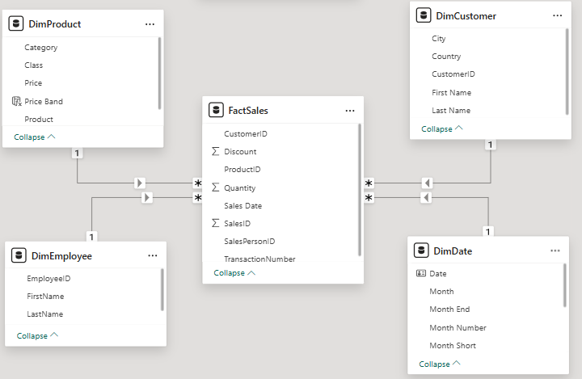
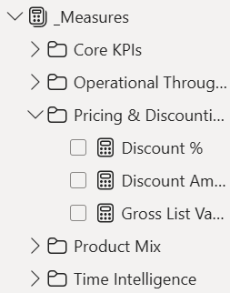
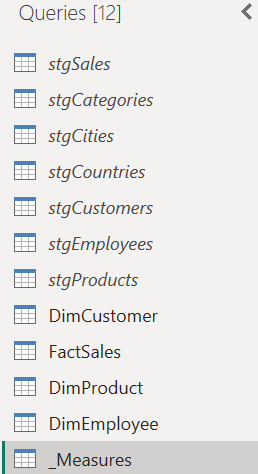

Sales Analytics Dashboard
Supporting Power BI project demonstrating star-schema modelling, DAX organisation, Power Query staging and report usability. This project is included as a BI fundamentals proof point, while the main portfolio focuses on real-world operational BI, Fabric and Power Platform delivery.
Context
Supporting BI fundamentals project
Role
Power BI / BI Developer
Focus
Model discipline + maintainability
Tools
Power BI, DAX, Power Query, Star Schema
Project purpose
This case study is positioned as a supporting Power BI fundamentals proof asset. The objective was to take multiple disconnected CSV sources and build a clean, analysis-ready Power BI implementation that demonstrates star-schema modelling, DAX organisation, Power Query staging and report usability.
Model design
I implemented a star schema with a central sales fact table and conformed dimensions for product, customer geography, employee, and date. Relationship directions were kept simple and predictable to reduce ambiguity in filter behaviour.
- Fact table: transaction-level sales records with quantity, price, discount, and dates.
- Dimension tables: product/category, customer geography, employee, and a dedicated date table for time intelligence.
- Semantic intent: separate descriptive attributes from transactional metrics for clearer model behaviour.
Why the model structure mattered
- Reduced calculation ambiguity by keeping filtering paths explicit.
- Made DAX measures easier to reason about, test, and maintain.
- Supported stable time-intelligence patterns through a dedicated date dimension.
- Created a reusable structure suitable for incremental extension.
Dashboard design choices
Report layout prioritised scanability and decision flow: headline KPIs first, then product mix, pricing/discount behaviour, and team-level performance slices. Visual density was kept moderate to support quick interpretation without overloading users.
- Consistent KPI cards and hierarchy to orient users quickly.
- Clear comparison views for trend and contribution analysis.
- Practical filter design to avoid accidental over-segmentation.
Technical implementation highlights
The implementation focused on maintainable build discipline rather than one-off dashboard output.
Semantic model (star schema)
Model view confirms a fact-and-dimensions structure with clean relationship paths and date-table support.

DAX measure organisation
Measures were grouped into display folders (core KPIs, time intelligence, pricing/discounting, product mix, team performance) to keep business logic discoverable and maintainable.

Power Query staging and final queries
Used a two-layer query pattern: staging queries for source cleansing/type-setting and referenced final queries for model loads. Staging queries remained disabled for load to keep the model tidy while preserving lineage.

Dashboard preview
What this demonstrates
- Semantic model discipline: clear star-schema design and stable relationship patterns.
- DAX structure: organised, reusable measures with practical governance for maintainability.
- Report usability: clear hierarchy and straightforward interaction flow for business users.
- Build hygiene: staged Power Query approach and explicit modelling choices that support long-term supportability.